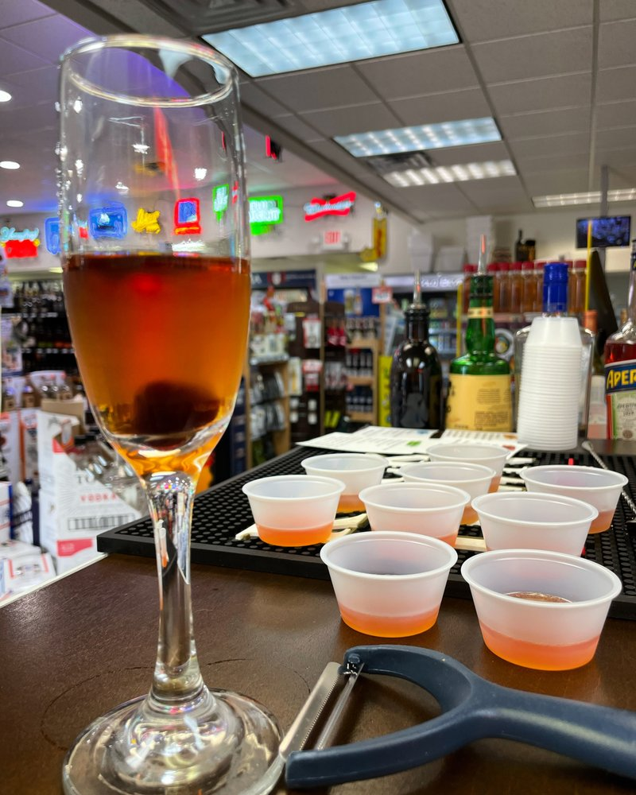
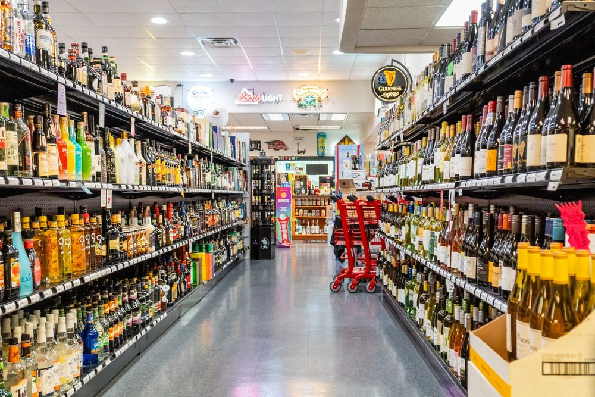
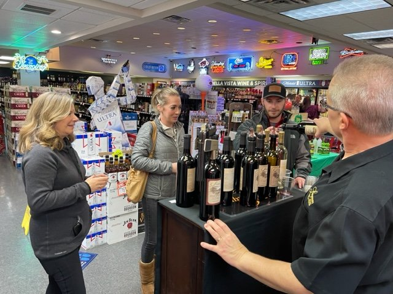
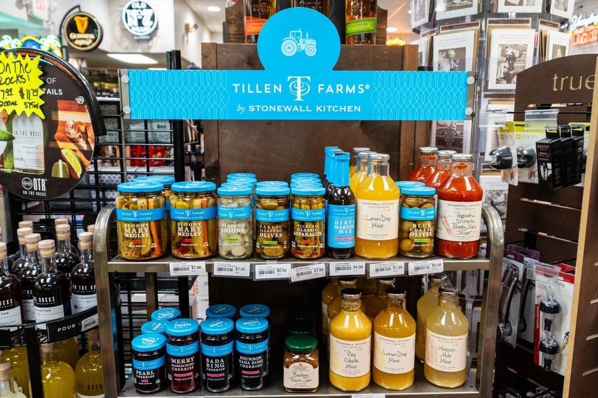

Modern local bottle shop in Bella Vista
Good bottles. Helpful people. Right here in Bella Vista.
Wine, spirits, beer, gifts, and quick recommendations for dinner, weekends, celebrations, and last-minute stops. We keep the shelves strong and the advice simple.
- Wine, whiskey, beer, and solid weeknight picks
- Helpful staff and a drive-thru window when time is tight
- Tastings and seasonal events that feel local, not stuffy


Worth the stop
Wine, spirits, beer, gifts, and straightforward local help.
A store that still makes things easy
The kind of bottle shop you can use for a quick stop or a better bottle.
Need a dinner wine, a bourbon gift, party beer, or help narrowing down a wall of choices? That’s what we’re here for. Bella Vista Wine & Spirits is built to be easy, useful, and worth coming back to.


Why people come here
Strong shelf. Straightforward help. Easy stop.
We don’t try to make this complicated. We keep good variety in the store and make it easier to leave with the right bottle for the moment.
Good selection
Everyday favorites, party staples, better bottles, and shelf finds that are worth a closer look.
Helpful staff
If you know the budget, the meal, or the person you’re buying for, we can narrow it down fast.
Tastings & events
In-store pours, seasonal tables, and low-pressure events that make it easier to try something new.
Quick stop convenience
Easy parking, fast checkout, and a drive-thru window for busy evenings and pickup on the way home.
Shop by category
Start with the shelf you already know you need.
Full shop pages can come next. For now, this homepage points people to the main categories they’ll expect in the store.
Wine
Weeknight bottles to dinner-party standouts.
Reds, whites, rose, sparkling, and reliable bottles that drink above their price.
Whiskey & Bourbon
Easy pours and gift-worthy bottles.
From everyday pickup bottles to better gifts for birthdays, hosts, and holidays.
Tequila & Mezcal
Margarita staples and sipping upgrades.
Bottles for casual taco night, porch drinks, and the people who know what they like.
Vodka, Gin & Rum
Solid staples for the home bar.
Classic labels, cocktail standards, and a few better picks if you want to step it up.
Craft Beer
Cooler-ready grabs and party stacks.
Local favorites, national names, and quick pickup options for the weekend crowd.
Ready-to-Drink
Grab-and-go without overthinking it.
Seltzers, canned cocktails, and easy options when convenience matters most.
Gifts & Party Picks
Hostess bottles, mixers, and celebration help.
Build a better dinner-party table or knock out a solid gift in one stop.
Staff picks
Useful picks for the week, the weekend, and the table.
These are sample homepage features for now, but the tone is simple on purpose: helpful picks, real budgets, no snob talk.
Good Bottles Under $25
Crisp whites, pizza-night reds, and a couple crowd-pleasers that work when you want something better without going big.
Weekend Whiskey Picks
A mix of dependable pour-at-home bottles and a few step-up options when guests are coming over.
Easy Dinner Wines
Flexible bottles for pasta, grilled chicken, takeout, and the kind of meal that doesn’t need a big speech.
Tastings & events
A store that stays active, not sleepy.
Tastings help people try before they buy, find something new, and get a feel for what makes the shop useful. A fuller calendar can come in the next site step.
See Upcoming Tastings
Friday, March 20 • 4-6 PM
Spring Porch Sippers
Fresh whites, crisp rose, and easy grab-and-go bottles for warmer weekends and weeknight dinners outside.
Thursday, March 26 • 5-7 PM
Bourbon Counter Tasting
A side-by-side pour of dependable whiskey picks and a few bottles worth stepping up for.
Saturday, April 4 • 1-4 PM
Dinner Party Wine Table
Easy reds, crowd-friendly whites, and a few hostess-bottle ideas for people who want help without the fuss.

Gifts, parties, and special occasions
Useful when you need more than a random bottle.
Hostess gifts, dinner-party wine, holiday bottles, celebration pours, mixers, or case requests for a bigger gathering. We can help you make the call without turning it into a project.
Hostess gifts that look thoughtful without feeling overdone
Party pickup for beer, wine, spirits, and mixer add-ons
Case requests and celebration bottles when the moment matters
Why regulars come back
Friendly help, a better shelf, and an easy place to stop.
Instead of polished platform badges, this section leans on the things people tend to mention most: helpful staff, good whiskey, convenient pickup, and tastings that are actually worth showing up for.
Friendly, useful help
People remember being greeted, getting a quick answer, and leaving with the right bottle.
Better whiskey than expected
One of the steady themes is finding a stronger bourbon shelf than most people expect from a quick stop.
Convenient without feeling generic
Easy parking, fast service, and local personality make it useful on the way home or before a gathering.
Visit us
Stop in, call ahead, or swing through the window.
We’re here for everyday bottles, better gifts, party pickup, and quick local help. Holiday hours may vary, so call if you want to confirm before heading over.
Bella Vista Wine & Spirits
31 Cunningham CornerBella Vista, AR 72714
Mon-Wed10 AM - 8 PM
Thu-Sat10 AM - 9 PM
SundayClosed
Map & directions
Embed-ready block for the next site step.
This placeholder can be swapped for a live map embed later. For now, it keeps the contact section clean and GitHub Pages-friendly.
- Easy parking
- Drive-thru window
- Quick stop on the way home